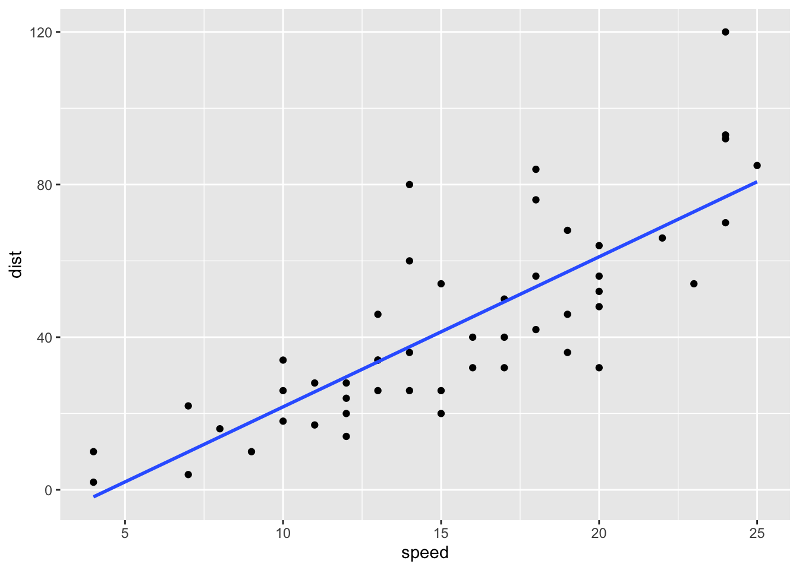

cars portfolio piece 4
Marcus Minko
3/21/2022
#The goal is to examine and plot the relationship between speed and stopping distance #data: speed and stopping distances of cars
library(tidyverse)## ── Attaching packages ─────────────────────────────────────── tidyverse 1.3.1 ──## ✓ ggplot2 3.3.5 ✓ purrr 0.3.4
## ✓ tibble 3.1.6 ✓ dplyr 1.0.8
## ✓ tidyr 1.2.0 ✓ stringr 1.4.0
## ✓ readr 2.1.2 ✓ forcats 0.5.1## ── Conflicts ────────────────────────────────────────── tidyverse_conflicts() ──
## x dplyr::filter() masks stats::filter()
## x dplyr::lag() masks stats::lag()summary(cars)## speed dist
## Min. : 4.0 Min. : 2.00
## 1st Qu.:12.0 1st Qu.: 26.00
## Median :15.0 Median : 36.00
## Mean :15.4 Mean : 42.98
## 3rd Qu.:19.0 3rd Qu.: 56.00
## Max. :25.0 Max. :120.00#plot
cars %>%
ggplot(aes(x = speed, y = dist)) + geom_point()
#Correlate
cars %>%
summarize(r = cor(speed, dist))## r
## 1 0.8068949#Linear Regression and Plot
lm_speed_dist <- lm(formula = dist ~ speed, data = cars)
summary(lm_speed_dist)##
## Call:
## lm(formula = dist ~ speed, data = cars)
##
## Residuals:
## Min 1Q Median 3Q Max
## -29.069 -9.525 -2.272 9.215 43.201
##
## Coefficients:
## Estimate Std. Error t value Pr(>|t|)
## (Intercept) -17.5791 6.7584 -2.601 0.0123 *
## speed 3.9324 0.4155 9.464 1.49e-12 ***
## ---
## Signif. codes: 0 '***' 0.001 '**' 0.01 '*' 0.05 '.' 0.1 ' ' 1
##
## Residual standard error: 15.38 on 48 degrees of freedom
## Multiple R-squared: 0.6511, Adjusted R-squared: 0.6438
## F-statistic: 89.57 on 1 and 48 DF, p-value: 1.49e-12#distance = -17.58 + (3.93)(speed)
cars %>%
ggplot(aes(x = speed, y = dist)) + geom_point() + geom_smooth(method = "lm", se = FALSE)## `geom_smooth()` using formula 'y ~ x'
#LM plot with standard error lines
cars %>%
ggplot(aes(x = speed, y = dist)) + geom_point() + geom_smooth(method = "lm")## `geom_smooth()` using formula 'y ~ x'#mutate distance/speed
cars <- cars %>%
mutate(dist_speed = dist / speed)
glimpse(cars)## Rows: 50
## Columns: 3
## $ speed <dbl> 4, 4, 7, 7, 8, 9, 10, 10, 10, 11, 11, 12, 12, 12, 12, 13, 1…
## $ dist <dbl> 2, 10, 4, 22, 16, 10, 18, 26, 34, 17, 28, 14, 20, 24, 28, 2…
## $ dist_speed <dbl> 0.5000000, 2.5000000, 0.5714286, 3.1428571, 2.0000000, 1.11…#mutate new column identifed cars that had a distance 3x or greater than speed
cars <- cars %>%
mutate(efficient = if_else(dist_speed >= 3 , "YES", "NO") )
#plot just the hyper efficient cars
cars %>%
filter(efficient == "YES") %>%
ggplot(aes(x = speed, y = dist)) + geom_point() + geom_smooth(method = "lm", se = FALSE)## `geom_smooth()` using formula 'y ~ x'